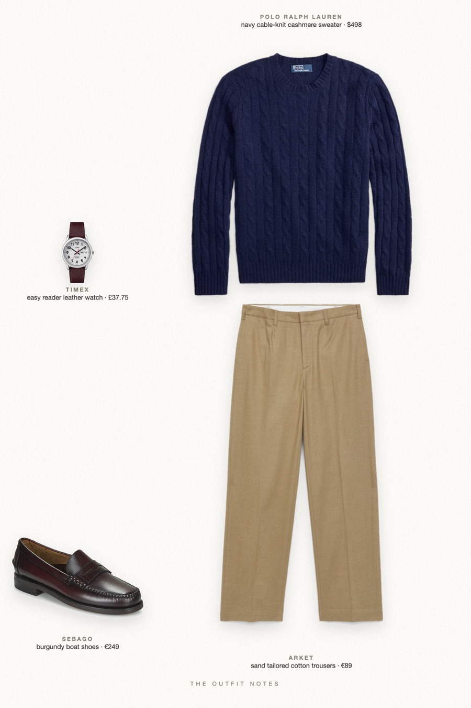
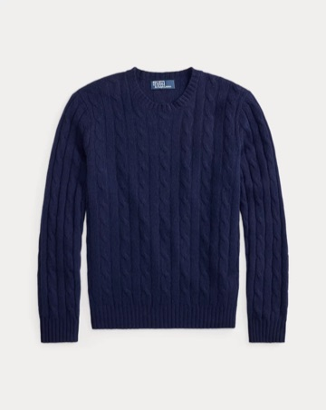
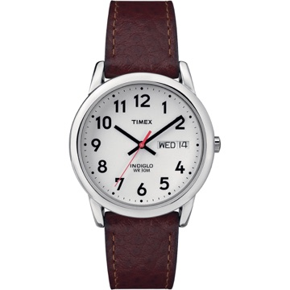

Campus Navy
ivy lawn, october light

A Ralph Lauren campaign look for fall 2026: the iconic navy cable-knit cashmere sweater from Polo Ralph Lauren, ARKET sand beige tailored trousers, burgundy Sebago Classic Dan loafers and a simple Timex leather-strap watch. Old money outfit for men, preppy and classy, made for autumn on campus.
The pieces
This page contains affiliate links: if you buy through them, we may earn a commission at no extra cost to you. Disclosure.

Polo Ralph Lauren
Navy cable-knit cashmere sweater
Shop ARKET
ARKET
Sand tailored cotton trousers
Shop Sebago
Sebago
Burgundy boat shoes
Shop
Timex
Easy reader leather watch
Shop
Prices are indicative, taken when the look was published, and may have changed. Pictures of the outfit are AI-generated illustrations of real products; the product photos are the retailers' own.
Published 2 October 2026.